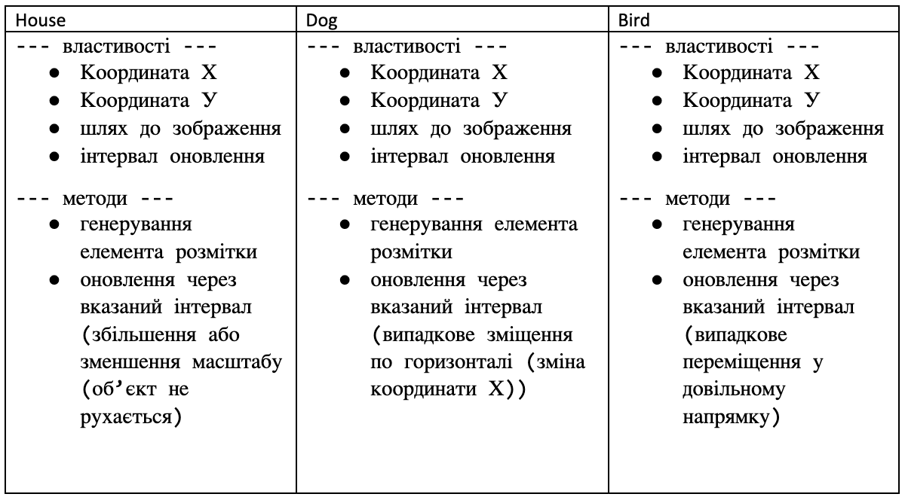

Створити клас Client. На основі цього класу створити клас GoldenClient. Створити клас Bank, у якому зберігається масив клієнтів. Виконати такі операції:
1) Вивести усіх простих клієнтів;
2) Вивести усіх клієнтів GoldenClient;
3) Знати сумарну кількість грошей на рахунку;
Розробити Класи. Подумайте яким має бути спільний клас предок.
Користувач задає місяць навчання учня (перевіряти чи є числом, чи від 1 до 12, чи не канікули) та оцінку (перевіряти чи є числом, чи від 1 до 100). Вивести чи зможе він виправити оцінку (якщо оцінка погана і це не останній місяць у семестрі) . Обробку усіх помилок зробити з використанням відповідних класів.